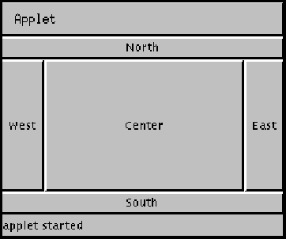

public class BorderLayout extends Object implements LayoutManager2, Serializable
NORTH，
SOUTH，
EAST，
WEST，和
CENTER。一个边界布局容器中添加组件时，使用这五个常数，例如：
面板P =新panel()；p.setlayout（新borderlayout()）；p.add（新按钮（“好”），BorderLayout。南）；作为一种方便、
BorderLayout解释字符串规范作为恒
CENTER相同的缺失：
面板P2 =新panel()；P2 setLayout（新borderlayout()）；P2。添加（新textarea()）；//同p.add（新textarea()，BorderLayout。中心）；
此外，BorderLayout支持相对定位常数，PAGE_START，PAGE_END，LINE_START，和LINE_END。在一个容器中的ComponentOrientation设置ComponentOrientation.LEFT_TO_RIGHT，这些常数图NORTH，SOUTH，WEST，和EAST，分别。
与以前的版本兼容，BorderLayout还包括相对定位常数BEFORE_FIRST_LINE，AFTER_LAST_LINE，BEFORE_LINE_BEGINS和AFTER_LINE_ENDS。这相当于PAGE_START，PAGE_END，分别LINE_START和LINE_END。对于与其他组件使用的相对定位常数的一致性，后者的常数是优选的。
混合绝对和相对定位常数可能会导致不可预测的结果。如果您使用这两种类型，将优先考虑相对常量。例如，如果你添加组件使用的NORTH和PAGE_START常数在容器的方向LEFT_TO_RIGHT，只有PAGE_START将布置。
注：目前（在java 2平台V1.2），BorderLayout不支持垂直方向。的isVertical设置在容器的ComponentOrientation不尊重。
该组件是根据他们的首选大小和容器的大小的限制。的NORTH和SOUTH组件可以横向拉长；的EAST和WEST组件可以垂直拉伸；的CENTER组件可能拉伸的水平和垂直填补留下任何空间。
这里是一个applet铺设使用BorderLayout布局管理器的五个按钮实例：

此小程序的代码如下：
import java.awt.*;
import java.applet.Applet;
public class buttonDir extends Applet {
public void init() {
setLayout(new BorderLayout());
add(new Button("North"), BorderLayout.NORTH);
add(new Button("South"), BorderLayout.SOUTH);
add(new Button("East"), BorderLayout.EAST);
add(new Button("West"), BorderLayout.WEST);
add(new Button("Center"), BorderLayout.CENTER);
}
}
Container.add(String, Component)，
ComponentOrientation，
Serialized Form
| Modifier and Type | Field and Description |
|---|---|
static String |
AFTER_LAST_LINE
page_end的同义词。
|
static String |
AFTER_LINE_ENDS
line_end的同义词。
|
static String |
BEFORE_FIRST_LINE
page_start的同义词。
|
static String |
BEFORE_LINE_BEGINS
line_start的同义词。
|
static String |
CENTER
中心布局约束（集装箱中部）。
|
static String |
EAST
东部布局约束（集装箱右侧）。
|
static String |
LINE_END
该组件在布局的行方向的结尾处。
|
static String |
LINE_START
组件在布局的行方向的开始处。
|
static String |
NORTH
北布局约束（集装箱顶部）。
|
static String |
PAGE_END
该组件是在布局的内容的最后一行之后的。
|
static String |
PAGE_START
该组件来之前布局的内容的第一行。
|
static String |
SOUTH
南布局约束（集装箱底部）。
|
static String |
WEST
西部布局约束（集装箱左侧）。
|
| Constructor and Description |
|---|
BorderLayout()
构造一个没有组件之间的间隙的新的边框布局。
|
BorderLayout(int hgap, int vgap)
用指定的组件之间的间隙构造一个边框布局。
|
| Modifier and Type | Method and Description |
|---|---|
void |
addLayoutComponent(Component comp, Object constraints)
使用指定的约束对象将指定的组件添加到布局中。
|
void |
addLayoutComponent(String name, Component comp)
过时的。
取而代之的
addLayoutComponent(Component, Object)。
|
Object |
getConstraints(Component comp)
获取指定组件的约束条件
|
int |
getHgap()
返回组件之间的水平间隙。
|
float |
getLayoutAlignmentX(Container parent)
返回沿X轴的对齐方式。
|
float |
getLayoutAlignmentY(Container parent)
返回沿Y轴的对齐方式。
|
Component |
getLayoutComponent(Container target, Object constraints)
返回对应于给定的约束位置基于目标
Container的元件定位组件。
|
Component |
getLayoutComponent(Object constraints)
获取使用给定约束添加的组件
|
int |
getVgap()
返回组件之间的垂直间隙。
|
void |
invalidateLayout(Container target)
无效的布局，表明如果布局管理器已缓存的信息应该被丢弃。
|
void |
layoutContainer(Container target)
使用此边界布局布局的容器参数。
|
Dimension |
maximumLayoutSize(Container target)
返回给定目标容器中的组件的这个布局的最大尺寸。
|
Dimension |
minimumLayoutSize(Container target)
决定使用这个布局管理器的
target容器的最小尺寸。
|
Dimension |
preferredLayoutSize(Container target)
决定使用这个布局管理器的
target容器首选大小，基于容器中的组件。
|
void |
removeLayoutComponent(Component comp)
从这个边界布局中移除指定的组件。
|
void |
setHgap(int hgap)
设置组件之间的水平间隙。
|
void |
setVgap(int vgap)
设置组件之间的垂直间隔。
|
String |
toString()
返回此边框布局状态的字符串表示形式。
|
public static final String NORTH
public static final String SOUTH
public static final String EAST
public static final String WEST
public static final String CENTER
public static final String BEFORE_FIRST_LINE
PAGE_START，
Constant Field Values
public static final String AFTER_LAST_LINE
PAGE_END，
Constant Field Values
public static final String BEFORE_LINE_BEGINS
LINE_START，
Constant Field Values
public static final String AFTER_LINE_ENDS
LINE_END，
Constant Field Values
public static final String PAGE_START
Component.getComponentOrientation()，
Constant Field Values
public static final String PAGE_END
Component.getComponentOrientation()，
Constant Field Values
public static final String LINE_START
Component.getComponentOrientation()，
Constant Field Values
public static final String LINE_END
Component.getComponentOrientation()，
Constant Field Values
public BorderLayout()
public BorderLayout(int hgap,
int vgap)
hgap和垂直间隙指定指定
vgap。
hgap -水平差距。
vgap -垂直间隙。
public int getHgap()
public void setHgap(int hgap)
hgap -组件之间的水平差距
public int getVgap()
public void setVgap(int vgap)
vgap -组件之间的垂直间隙
public void addLayoutComponent(Component comp, Object constraints)
NORTH，
SOUTH，
EAST，
WEST，或
CENTER。
大多数应用程序不直接调用此方法。这种方法被称为当一个组件被添加到容器中使用Container.add方法具有相同的参数类型。
addLayoutComponent 接口
LayoutManager2
comp -要添加的组件。
constraints -一个对象，指定如何在组件被添加到布局。
IllegalArgumentException -如果约束对象不是一个字符串，或者如果它不是五个指定的常数。
Container.add(java.awt.Component, java.lang.Object)
@Deprecated public void addLayoutComponent(String name, Component comp)
addLayoutComponent(Component, Object)。
LayoutManager
comp的布局，将其与指定的字符串
name。
addLayoutComponent 接口
LayoutManager
name要与组件关联的字符串
comp -要添加的组件
public void removeLayoutComponent(Component comp)
remove或
removeAll方法。大多数应用程序不直接调用此方法。
removeLayoutComponent 接口
LayoutManager
comp -要移除的组件。
Container.remove(java.awt.Component)，
Container.removeAll()
public Component getLayoutComponent(Object constraints)
constraints -所需的约束，一个
CENTER，
NORTH，
SOUTH，
WEST，
EAST，
PAGE_START，
PAGE_END，
LINE_START，
LINE_END
null如果位置是空的
IllegalArgumentException -如果约束对象不是九个指定的常数
addLayoutComponent(java.awt.Component, java.lang.Object)
public Component getLayoutComponent(Container target, Object constraints)
Container的元件定位组件。组件添加相应的约束条件
PAGE_START，
PAGE_END，
LINE_START，和
LINE_END先于组件添加显式约束
NORTH，
SOUTH，
WEST，和
EAST，
Container的元件定位来确定组件添加
LINE_START和
LINE_END位置。
constraints -所需的绝对位置，一个
CENTER，
NORTH，
SOUTH，
EAST，
WEST
target用于基于目标
Container的元件定位得到约束位置的
Container。
null如果位置是空的
IllegalArgumentException -如果约束对象不是五个指定的常数
NullPointerException -如果目标参数为空
addLayoutComponent(java.awt.Component, java.lang.Object)
public Object getConstraints(Component comp)
comp -要查询的组件
addLayoutComponent(java.awt.Component, java.lang.Object)
public Dimension minimumLayoutSize(Container target)
target容器的最小尺寸。
这个方法被调用时，调用它的getMinimumSize容器的方法。大多数应用程序不直接调用此方法。
minimumLayoutSize 接口
LayoutManager
target -其中的容器来做布局。
Container，
preferredLayoutSize(java.awt.Container)，
Container.getMinimumSize()
public Dimension preferredLayoutSize(Container target)
target容器首选大小，基于容器中的组件。
大多数应用程序不直接调用此方法。这个方法被调用时，调用它的getPreferredSize容器的方法。
preferredLayoutSize 接口
LayoutManager
target -其中的容器来做布局。
Container，
minimumLayoutSize(java.awt.Container)，
Container.getPreferredSize()
public Dimension maximumLayoutSize(Container target)
maximumLayoutSize 接口
LayoutManager2
target -这需要把组件
Container，
minimumLayoutSize(java.awt.Container)，
preferredLayoutSize(java.awt.Container)
public float getLayoutAlignmentX(Container parent)
getLayoutAlignmentX 接口
LayoutManager2
public float getLayoutAlignmentY(Container parent)
getLayoutAlignmentY 接口
LayoutManager2
public void invalidateLayout(Container target)
invalidateLayout 接口
LayoutManager2
public void layoutContainer(Container target)
这种方法实际上重塑成分为指定的容器来满足这BorderLayout对象的约束。如果有任何的NORTH和SOUTH组件，放置在容器的顶部和底部，分别。的WEST和EAST部件然后被放置在左和右，分别。最后，该CENTER对象放置在任何剩余的空间中。
大多数应用程序不直接调用此方法。这个方法被调用时，调用它的doLayout容器的方法。
layoutContainer 接口
LayoutManager
target -其中的容器来做布局。
Container，
Container.doLayout()
Submit a bug or feature
For further API reference and developer documentation, see Java SE Documentation. That documentation contains more detailed, developer-targeted descriptions, with conceptual overviews, definitions of terms, workarounds, and working code examples.
Copyright © 1993, 2014, Oracle and/or its affiliates. All rights reserved.